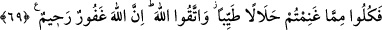

68. Eğer önceden Allah tarafından verilmiş bir hüküm olmasaydı, aldıklarınızdan
dolayı size mutlaka büyük bir azab dokunurdu.
“Eğer önceden” ictihadda bir hatadan dolayı cezâlandırmamak veya Bedir’e katılan
müslümanlara azab etmemek ya da henüz bir yasak kendilerine açıklanmayan bir kavme
azâb etmemek gibi “Allah tarafından verilmiş” levh-i mahfuzda yazılmış “bir hüküm
olmasaydı, aldıklarınızdan dolayı” aldığınız fidye sebebiyle “size mutlaka” ne kadar
olduğunu takdir edemeyeceğiniz “büyük bir azab dokunurdu.” isâbet ederdi.
et-Te’vîlâtü’n-Necmiyye’de şöyle denilmiştir: “Eğer” bazısının kendisinin, bazısının
da çocuklarının ve zürriyetlerinin îmân etmesi için o esirlerin sağ bırakılmaları ile ilgili
“önceden Allah tarafından verilmiş bir hüküm olmasaydı…”
Rivayete göre Hz. Peygamber (a.s.): “Azab inmiş olsaydı, Ömer ve Sa‘d b. Muâz’dan
başka kurtulan olmazdı.”[70] buyurmuştur. Sa’d b. Muaz (r.a.) da Hz. Ömer gibi
esirlerin öldürülmesi yönünde görüş belirtmişti. Hadis, Bedir savaşına katılan
müminlerin bu ikisi dışında hepsinin fidye alma taraftarı olduklarına delâlet etmektedir.
Abdullah b. Ömer (r.a.) şöyle demiştir: Ne zaman insanların başına bir iş gelse Ömer
bir görüş söyler, diğerleri de başka bir görüş ileri sürerdi. Fakat Kur’an-ı Kerim,
Ömer’in görüşüne muvâfık bir sûrette nâzil olurdu.
Bir hadiste şöyle buyurulmuştur: “Muhakkak ki Allah hakkı Ömer’in dili ve kalbi
üzerine koymuştur.”[71]
Bazı konularda Hz. Ömer’in görüşü, daha sonra gelen vahye uygun düşmüştür. Birisi
burada anlatılan Bedir esirleri ile ilgili görüşüdür.
Bir başkası da Hz. Ömer’in: “Ya Rasûlallah, eşlerinizin yanına iyi de kötü de
girebiliyor. Emretseniz de örtünseler.” demiş, ardından hicab (örtünme) âyeti nâzil
olmuştur.
Yine bir zaman Rasûlullah (s.a.v.)’in eşleri bazı istekleri konusunda kendisine karşı
birlik olmuşlar, Hz. Ömer de onlara: “O sizi boşarsa belki de Rabbi ona, sizden daha
hayırlı eşler verir.” (bk. et-Tahrîm, 66/5) demişti (yani Hz. Ömer’in önceden söylediği
söz, lafzen de gelen âyete uygun düşmüştü).
69. Artık aldığınız ganimetten helâl ve temiz olarak yeyin ve Allah’tan korkun.
Şüphesiz Allah, bağışlayan, esirgeyendir.”
Rivayet edildiğine göre yukarıdaki âyetler nâzil olunca ashab ganîmet mallarına el
uzatamadılar. Bunun üzerine Allah Teâlâ şöyle buyurdu: “Artık aldığınız ganimetten
helâl ve temiz olarak yeyin.” Yani size ganîmetleri mübah kıldım. Ganîmet ve fidye
olarak aldıklarınızı yeyin.
“Helâl ve temiz olarak” buyurulmasının faydası, ilâhî azarlama sebebiyle ganîmetin